Winnie-the-Pooh, collection of children’s stories by A.A. Milne, published in 1926. Milne wrote the episodic stories of Winnie-the-Pooh and its sequel,
The House at Pooh Corner (1928), for his young son, Christopher Robin, whose toy animals were the basis for many of the characters and
whose name was used for the young boy who appears in the tales as the benign master of the animals.
The list of main characters:
- Christopher Robin
-
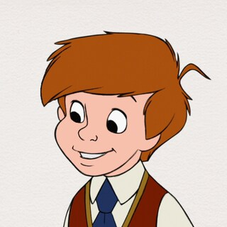
Christopher Robin, fictional character, an English boy whose adventures with Winnie-the-Pooh, Piglet,
and other animals are the basis of the stories in the classic children’s books Winnie-the-Pooh (1926)
and The House at Pooh Corner (1928) by A.A. Milne. The character was based on the author’s young son.
In the stories, Christopher Robin is usually the voice of reason and the character who can
be relied on to get the animals out of the predicaments they get themselves into. He is also a character
in the verse collections When We Were Very Young (1924) and Now We Are Six (1927).
-
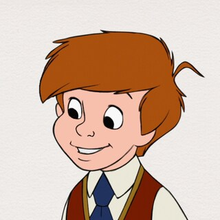
- Winnie-the-Pooh
-
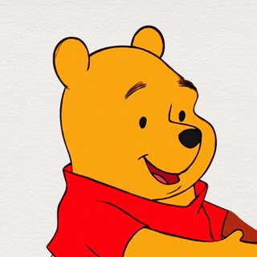
The main character, Winnie-the-Pooh (sometimes called simply Pooh or Edward Bear), is a good-natured,
yellow-furred, honey-loving bear who lives in the Forest surrounding the Hundred
Acre Wood (modeled after Ashdown Forest in East Sussex, England). His companions are Eeyore, a
gloomy gray donkey; Piglet, a timid pig; Owl, a pontificating bird; the meddlesome Rabbit; and
Kanga, an energetic kangaroo whose inquisitive baby, Roo, lives in her pouch.
-
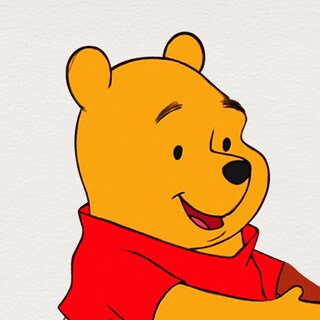
- Tigger
-
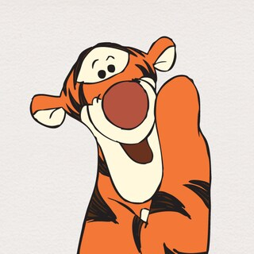
Tigger is a fictional character, an anthropomorphic stuffed tiger. He was originally introduced in
the 1928 story collection The House at Pooh Corner, the sequel to the 1926 book Winnie-the-Pooh
by A. A. Milne. Like other Pooh characters, Tigger is based on one of Christopher Robin Milne's
stuffed toy animals. He appears in the Disney animated versions of Winnie the Pooh and has also
appeared in his own film, The Tigger Movie (2000).
-
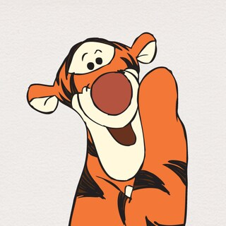
- Eeyore
-

Eeyore, fictional character, a donkey in several popular children’s stories by A.A. Milne. Eeyore,
whose tail is attached by a nail, is one of Christopher Robin’s many toy animals whose adventures
are detailed in the stories in Winnie-the-Pooh (1926) and The House at Pooh Corner (1928).
A melancholy misanthrope, Eeyore frequently makes bitter, self-deprecating comments
that make him an excellent foil for Winnie-the-Pooh, the affectionate, bumbling Bear of Very Little Brain.
-
- Piglet
-
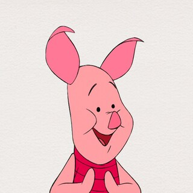
Though Pooh and the others don't seem to mind Piglet's phobias and happily bring him along and/or
protect him through every adventure, Piglet is noticeably embarrassed and ashamed of his dominate
cowardliness, and many stories have revolved around him making attempts to overcome his fears.
When it comes to adventuring, Piglet is somewhat of a reluctant hero, as he typically likes to
avoid any potential danger by staying home, only to tag along out of fear of disappointing his
friends. Though he's far from the bravest animal, he has successfully come through for his friends on
numerous occasions. This is mostly due to the fact that Piglet is surprisingly crafty and
harbors impressive physical strength. He's also rather creative and inventive, being able to
create contraptions out of whatever is around him, to use to his and his friends' advantage.
-
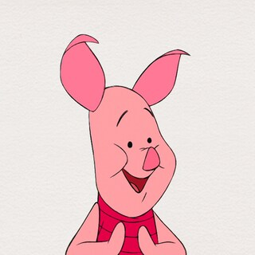
- Rabbit
-
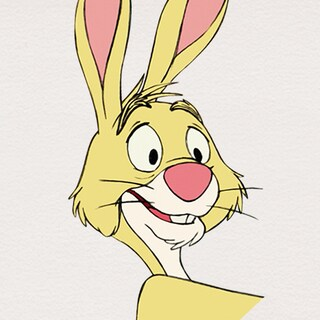
Rabbit lives in a large tree in the Hundred Acre Wood, surrounded by an expansive vegetable garden.
When not adventuring with Pooh and the others, Rabbit mainly spends his time either tending to
his crops or indulging in some of his other hobbies like reading and cleaning. He is also a
harvester of honey, which often leads to unwanted visits from a hungry Pooh Bear.
-
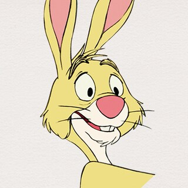
- Kanga & Roo
-
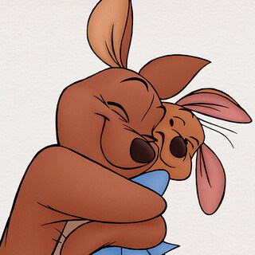
Kanga is easily the most down-to-earth resident of the Hundred Acre Wood, so much so that she rarely
joins the madcap exploits of her friends. Being a mother, Kanga is sweet and nurturing to both
Roo and the others. She is also wise to some degree and shares this wisdom with other residents,
such as Piglet.Roo takes after Tigger in that he is spirited and adventurous. He acts his age, being curious and
energetic. He is also optimistic and fearless; when he and Tigger were stuck atop a tall tree,
Roo remained calm and upbeat throughout the entire ordeal while Tigger was petrified. Another
example is the time Roo was caught in a river. Rather than panicking, he remained happy-go-lucky,
despite how worried the adults were.
-
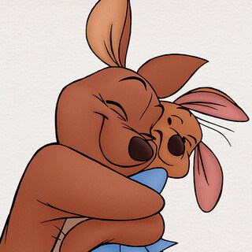
- Owl
-
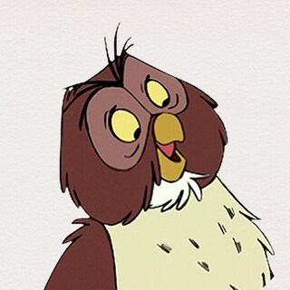
Though Owl is indeed an intellectual, his intelligence is somewhat questionable, as well as his
ability to read, as twice he misread messages from Christopher Robin and believed the boy was in
danger, causing unnecessary worry in Pooh and friends, and sometimes even almost getting them
killed. It should be noted, however, that Owl has some legitimate ability to read and write,
though Christopher Robin's juvenile spelling and grammar are causing Owl confusion.
-
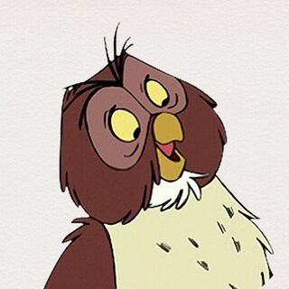
- Christopher Robin